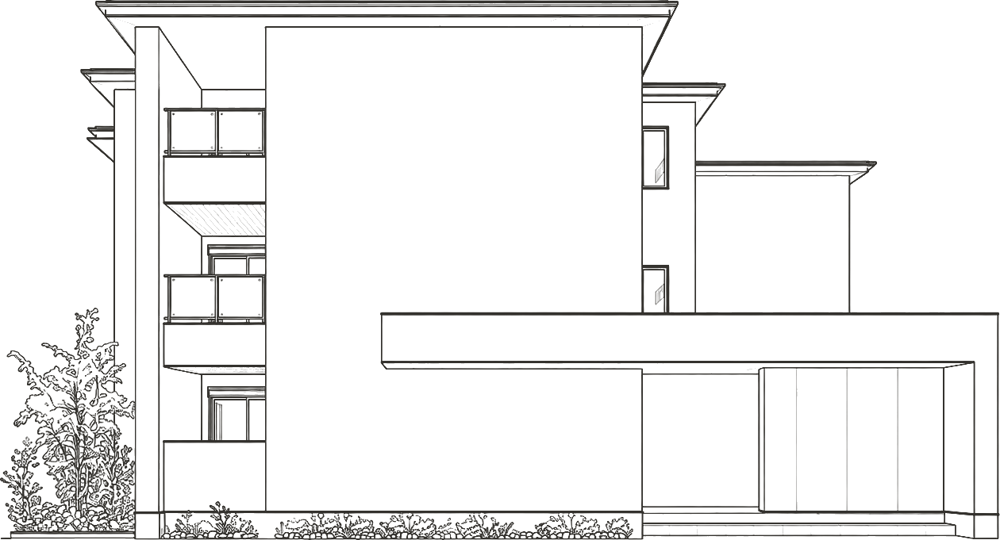
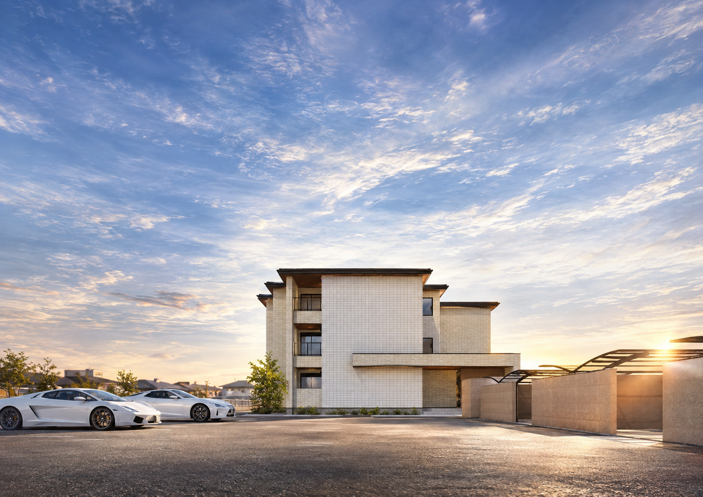
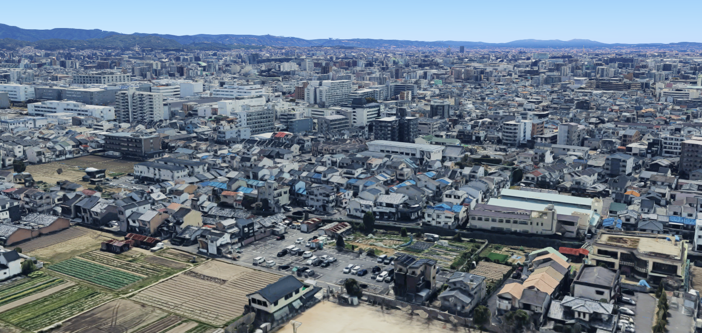
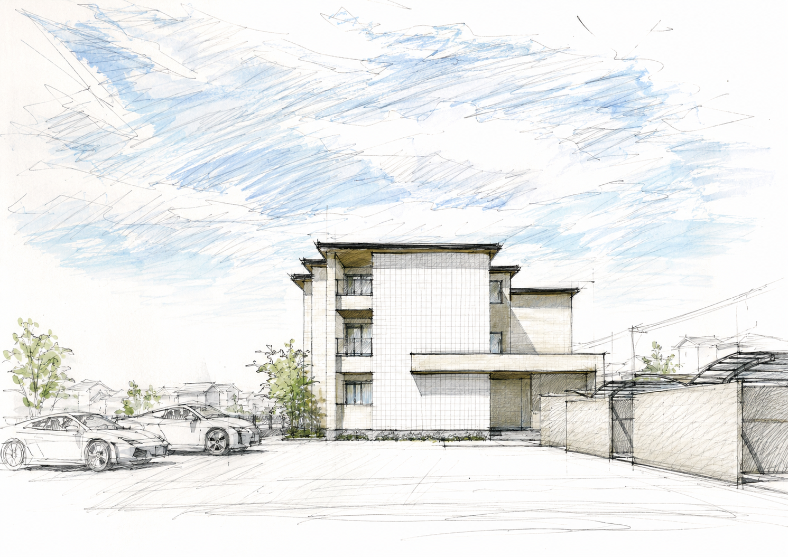
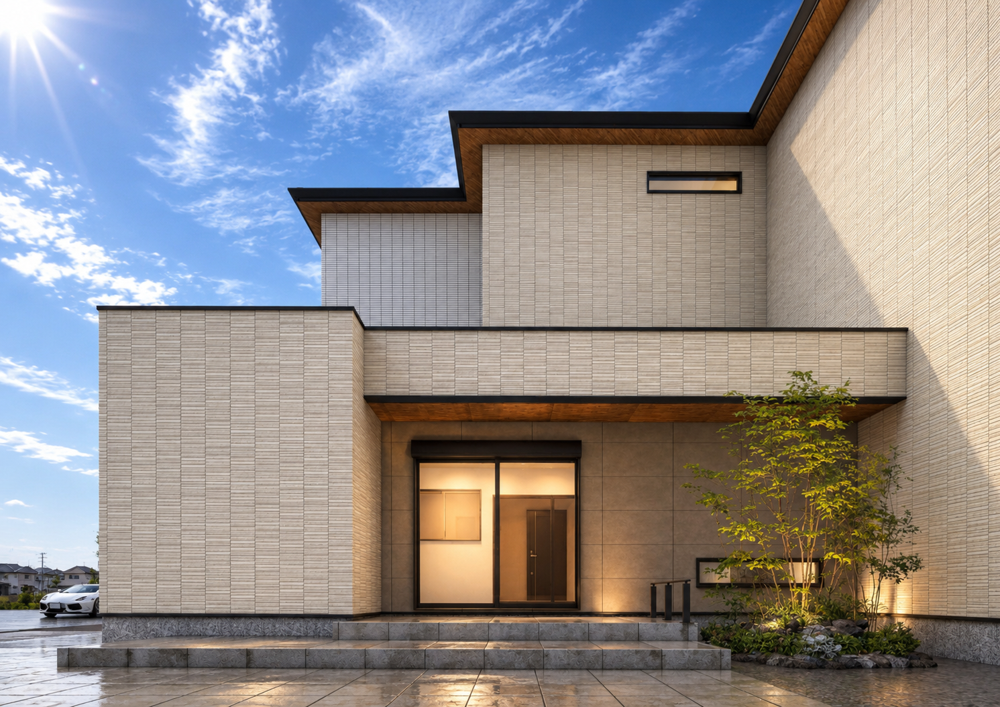
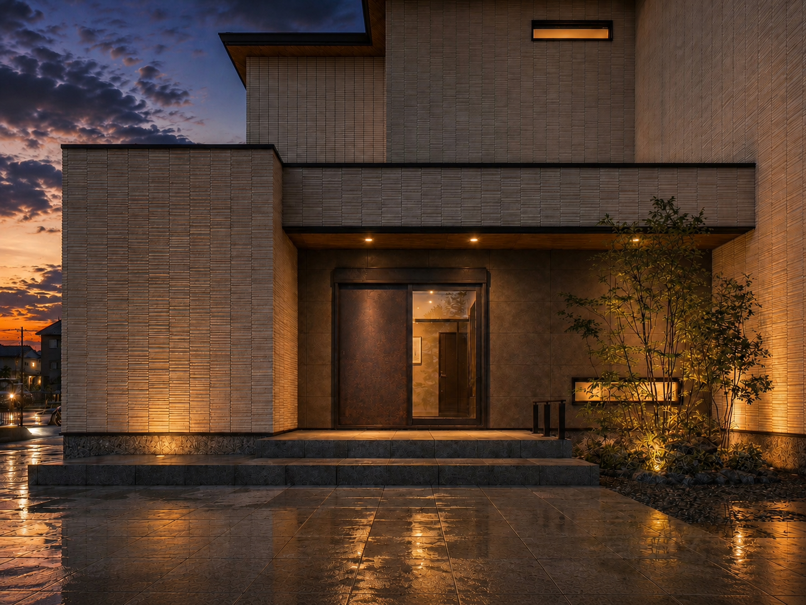

ほどく。
土地全体を読み解き、今ある条件と役割を整理する。


UZUMASA YASUI NIJO URACHO
土地の今と、その先を考える資産活用計画。
PROJECT CONCEPT
3,000㎡を超える所有地には、現在の役割と、この先の可能性が重なっています。今回の計画では、道路の奥に位置する月極駐車場の一部を建築地として選び、土地全体の流れを乱さない位置から、新しい収益資産をつくります。
相続税対策だけに答えを求めず、賃貸事業としての健全性を大切にする。そして、生産緑地や残地には、追加建築・駐車場の継続・売却など、その時代、その世代が改めて選べる可能性を残します。
土地全体を読み解き、今ある条件と役割を整理する。
最大ボリュームを一度に建築するのではなく、将来の可能性・選択肢を最大化した区分けを設定した上で、適当な投資ボリュームを見極める。
大切な資産を、あらゆる可能性と共に次世代へ。
LAND STRATEGY
今回の建築は、所有地全体の完成形ではありません。いま必要な場所に、いま必要な役割を与える。その一方で、残された土地には、次のタイミング、または次の世代が改めて選べる可能性を残しておく。建物の配置だけではなく、土地がこれから辿る時間まで見据えた計画です。

ARCHITECTURE
面デザインと木調軒天、エントランス庇が織りなして作る、重厚な陰影。正面では静かに構え、斜めからは奥行きと変化を見せる。見る距離、角度、時間によって異なる表情を持つファサードが、太秦の街に新しい存在感を刻みます。



ENTRANCE & COMMON SPACE
歩車動線を分けたアプローチから、自動ドア、風除室、オートロックを経て共用部へ。コンパクトなラウンジと植栽の借景を設け、帰宅の時間、ウチとソトの間に小さな余白をつくります。
ROOM PLAN
全15戸のうち12戸を60㎡前後の2LDKに。二人暮らしから子ども1人程度のファミリーまで、長く住み続けやすい住戸構成を主役にしました。1LDKを3戸組み合わせることで、入居者層にも幅を持たせています。
1階平面図
LIVING QUALITY
フラット対面キッチン、ウォークインクローゼット、1616サイズの浴室。見栄えだけでなく、毎日の暮らしの質を支える基本性能を整えます。


LOCATION
京都市営地下鉄東西線「太秦天神川」駅 徒歩11分。市内中心部へつながりながら、駅前の喧騒から少し離れた住宅地。日常の買い物や行政施設も徒歩・自転車圏に揃います。
京都市立安井小学校区 ／ 京都市立四条中学校区
OWNER VALUE / FUTURE
今回の15戸は、土地全体の将来を固定するものではありません。賃貸収益を生みながら、残された土地には次の判断ができる状態を残す。相続税対策と事業性を両立し、資産を「選択肢ごと」次の世代へつなぐことを目指します。
UZUMASA YASUI NIJO URACHO